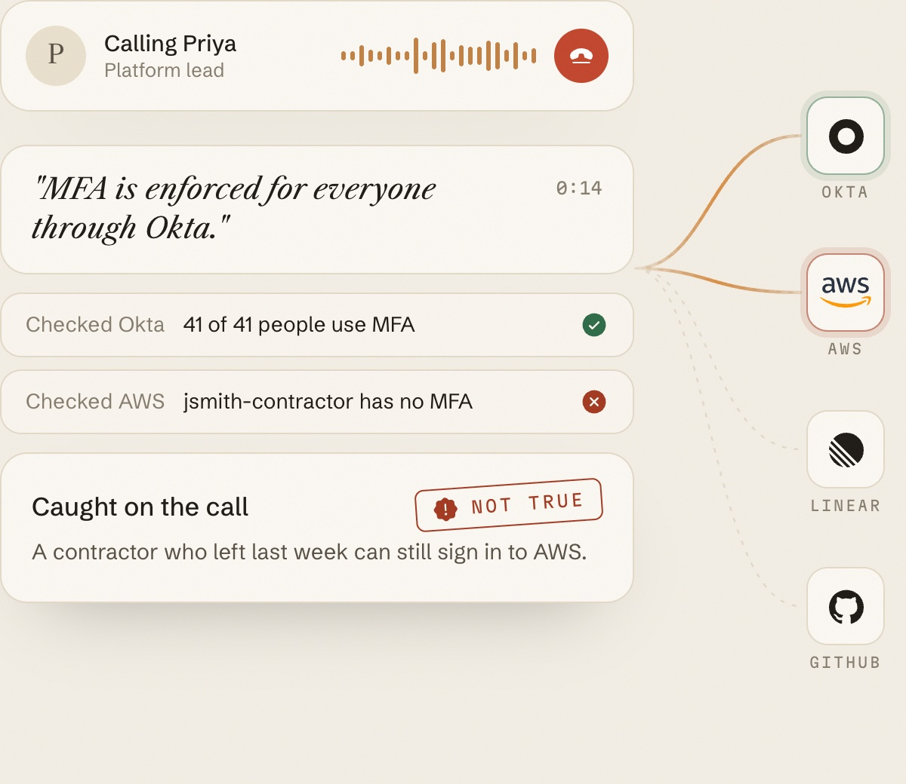
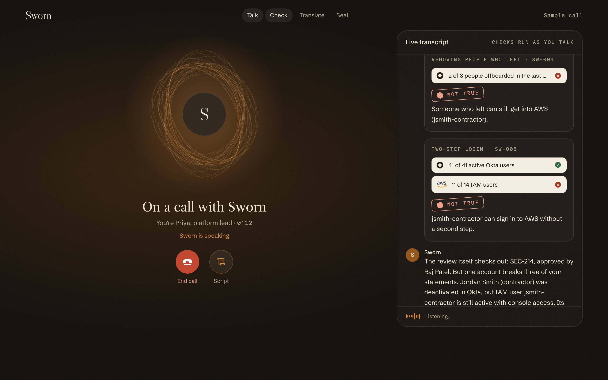
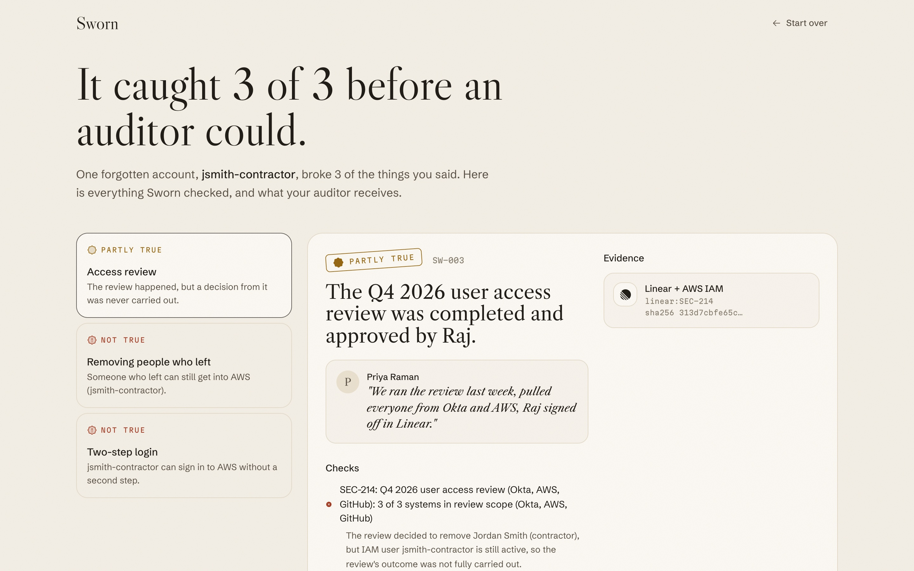
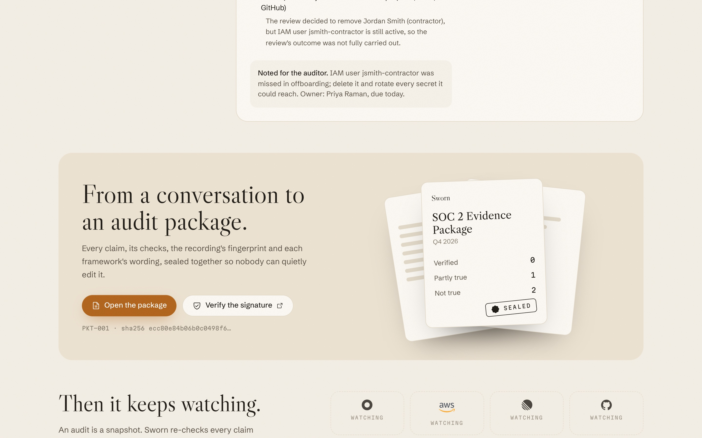

Say it.
Sworn checks if it's true.
An always-on voice agent that verifies what your team says about security against what your systems actually show.
LoxeAI · Bolna Symphony Buildathon

What Sworn is
Always on
Calls the owner of a control at quarter end, when a system changes, or when an auditor dials in. Nobody has to remember.
Continuous
Every claim is re-checked whenever Okta, AWS or GitHub change. If what someone said stops being true, Sworn calls them back.
Verifiable
Each answer cites the system record behind it and is sealed with a signature anyone can check. No record, no answer.
The problem
How it goes today
With Sworn on the call
of SOC 2 exams needed extra rounds of evidence requests
ended with at least one exception
of enterprise buyers say security review is their biggest delay after choosing a vendor
Why not just send an email?
Voice matters because auditors already work by interview, and people explain more out loud than they ever write down. The same verified ledger also answers by text and to other agents over MCP.
Why now
Demand
Every enterprise deal now opens with a security review.
Load
SOC 2, ISO 27001 and 42001, the EU AI Act, DPDP, FedRAMP 20x. Same questions, new dialects.
Trust
2026's evidence-fabrication allegations left auditors asking for proof, not prose.
Voice
calls a day on Bolna, in 10+ languages.
Real product · sample call

How it works
mfa.enforced · everyone · okta, awsEach claim with its checks, its evidence, the owner's response and every framework's wording, sealed together.
Signing proves the record wasn't altered. The checks are what make it true.


The secret sauce
Target market
Market size
GRC software · TAM
2025, depending on definition; 9 to 11% a year.
Compliance automation + questionnaires · SAM
2025 to 2031, growing 23 to 31% a year.
Voice AI agents · tailwind
2025 to 2033, 39% a year.
companies already pay for a compliance platform (Vanta 16,000+, Drata 8,500+, Sprinto 3,000+, Scrut 2,500+). At an assumed $12k a year, that's a $360M+ bottom-up starting market.
Competition
Why we win
The moat
Every interview adds checked claims and the follow-ups auditors actually ask. Every system change re-tests them.
LoxeAI connects AWS, Okta, Google, GitHub, HR and MDM, with reperformable checks.
LoxeAI is validated by 10+ audit firms, including Prescient Security and Linford & Co.
Signed packets anyone can check, and an MCP endpoint for buyers' procurement agents.
Built on Bolna, ready for Hindi and Hinglish for engineers in India's GCCs.
Team
Founder and CEO
Founded LoxeAI. Northeastern University. 200+ interviews with founders, auditors and vCISOs.
Co-founder and CTO
Leads LoxeAI's backend and evidence engine: connectors, checks and signed audit packages.
Next: real LoxeAI connectors, SSO-signed owner attestation, Hindi and Hinglish calls, and an opt-in incident scribe for regulatory clocks.